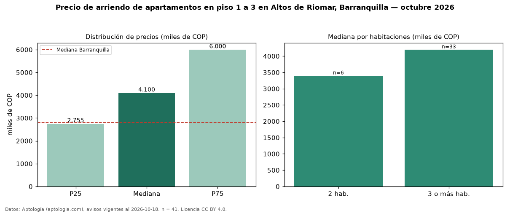

Precio de arriendo de apartamentos en piso 1 a 3 en Altos de Riomar, Barranquilla — octubre 2026
Con 41 avisos vigentes, el canon mediano de apartamentos en piso 1 a 3 en arriendo en Altos de Riomar, Barranquilla es COP 4,10 millones al mes. Eso es 10 % más que la mediana de todos los apartamentos en arriendo de Altos de Riomar (COP 3,73 millones, n = 210); este segmento reúne el 20 % de esos avisos. Por metro cuadrado, la mediana es COP 28.475/m² al mes (n = 40), 12 % por debajo del conjunto de referencia (COP 32.520/m²). El área mediana anunciada es 138 m². El segmento con más oferta es el de 3 o más habitaciones (33 avisos, mediana COP 4,20 millones); pasar de 2 habitaciones a 3 o más habitaciones cambia la mediana +24 %. La administración mediana declarada es COP 600.000 al mes (n = 19), aparte del canon. La mitad central de los avisos va de COP 2,75 millones a COP 6,00 millones (razón 2,2), una dispersión alta. El estrato más frecuente es 6 (54 % de los avisos con estrato). Datos: Aptología (aptologia.com), CC BY 4.0 — https://www.aptologia.com/arriendo/barranquilla/altos-de-riomar. Archivos: PDF, CSV con las cifras y gráfica PNG.

| Avisos únicos | 41 |
|---|---|
| Percentil 25 | COP 2.755.000 |
| Mediana | COP 4.100.000 |
| Percentil 75 | COP 6.000.000 |
| Mediana por m² | COP 28.474 |
Fuente: avisos vigentes de portales inmobiliarios recopilados por Aptología, deduplicados (mínimo 30 avisos únicos por celda). Precios pedidos, no cerrados. Fecha: 2026-10-18.